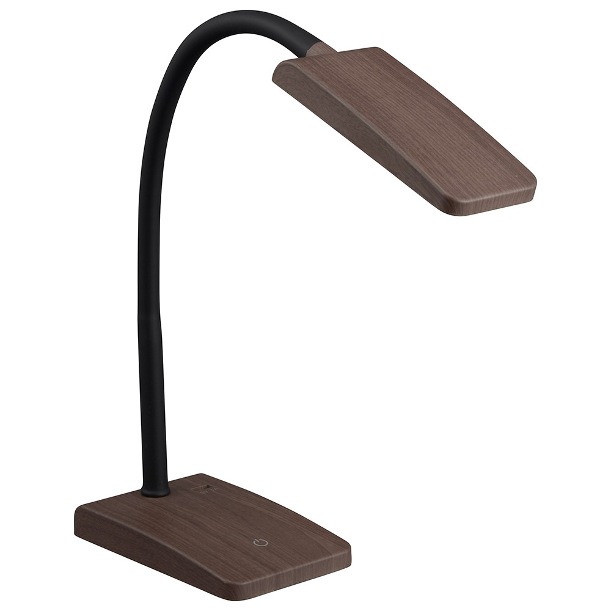
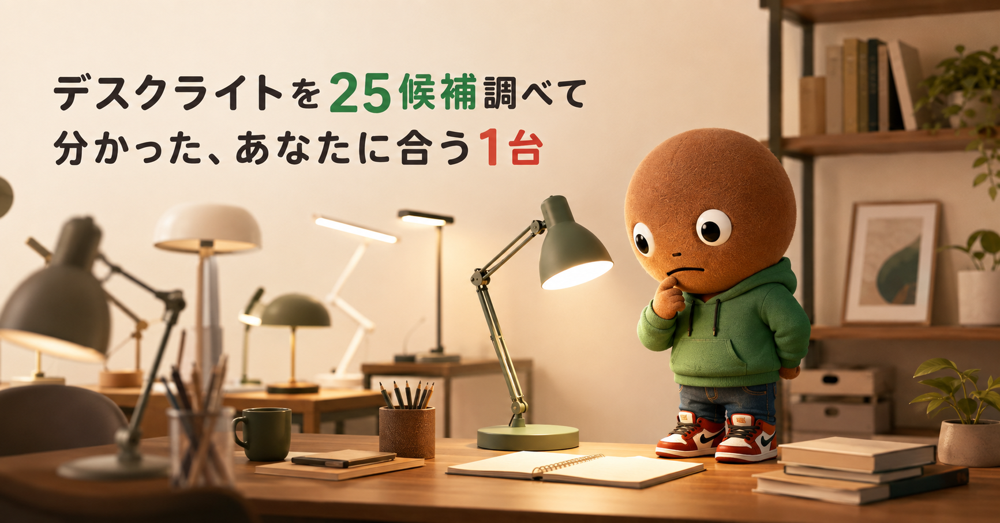
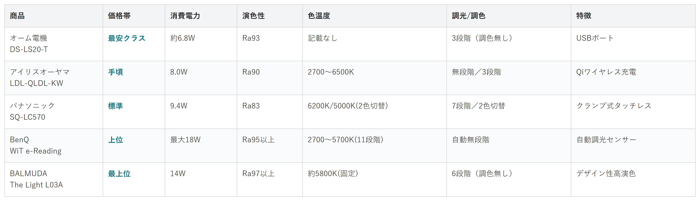

Amazonで見る在宅ワークでデスクの照明を見直したい人へ
その明かり、
目に合ってる？
デスクライト25候補を調査。価格・消費電力・演色性・調光調色から、選び方の違う5商品を比較しました。
自分に合うライトを探す
この記事はAmazonアソシエイト・プログラムの参加者として、紹介料を得る場合があります（PR）。仕様は調査時点の情報です。
25候補から、選び方の違う5商品に絞りました。まずは気になる1台へ。向いている人・向いていない人と、低評価レビューもまとめています。
25候補を調査
5商品に厳選
低評価レビューも確認済み
結論から先に言うと：
あなたの使い方に合う、1台を。
横にスワイプして、5商品を見比べる
選び方の基準は2つだけ
調べてわかったのは、基準はシンプルでした。
1つ目は「演色性（Ra）」。数字が高いほど、物の色が自然に見えます。
2つ目は「調光・調色の幅」。明るさと色味を、自分の作業に合わせて変えられるかどうかです。
比較表

価格帯・消費電力・演色性・色温度・調光調色・特徴の比較（価格帯は最安クラス〜最上位の5段階）
オーム電機 DS-LS20-T
- 最安クラス
- 消費電力：約6.8W
- 演色性：Ra93
- 色温度：記載なし
- 調光/調色：3段階（調色無し）
- 特徴：USBポート
アイリスオーヤマ LDL-QLDL-KW
- 手頃
- 消費電力：8.0W
- 演色性：Ra90
- 色温度：2700〜6500K
- 調光/調色：無段階／3段階
- 特徴：Qiワイヤレス充電
パナソニック SQ-LC570
- 標準
- 消費電力：9.4W
- 演色性：Ra83
- 色温度：6200K/5000K（2色切替）
- 調光/調色：7段階／2色切替
- 特徴：クランプ式タッチレス
BenQ WiT e-Reading
- 上位
- 消費電力：最大18W
- 演色性：Ra95以上
- 色温度：2700〜5700K（11段階）
- 調光/調色：自動無段階
- 特徴：自動調光センサー
BALMUDA The Light L03A
- 最上位
- 消費電力：14W
- 演色性：Ra97以上
- 色温度：約5800K（固定）
- 調光/調色：6段階（調色無し）
- 特徴：デザイン性高演色
向いてる人
- 初めてデスクライトを買う人
- 価格を抑えたい人
向いてない人
- 色味を変えたい人
選ぶ決め手とにかく手頃に試したいなら、この1台です。
低評価レビューも見ました
スマホの充電にUSBポートを使用していると、しばらくしてチラつく現象が発生するという報告があります。半年ほど使ってチラつきが出たという耐久性についての指摘もあり、点灯中に一度のタップで消灯しないのが煩わしいという声もありました。
5商品で一番手頃です。
全光束は約460lm。
照度は約1600lxです。
演色性はRa93。
調光は3段階、
消費電力は約6.8W。
USBポートも付いています。
向いてる人
- スマホを机に置きながら充電もしたい人
向いてない人
- Qi充電を使わない人
選ぶ決め手充電機能もまとめたいなら、この1台です。
低評価レビューも見ました
USB充電とワイヤレス充電は同時に使えず、どちらか一方のみの利用になります。USB充電・ワイヤレス充電とも出力が低めなため、最新のスマホでは充電速度がやや遅く感じるという指摘がありました。
参考：たいしょんブログ
LDL-QLDL-KWは
Qiワイヤレス充電に対応
全光束は700lm。
照度は約2500lx。
演色性はRa90です。
色温度は2700〜6500Kで、
調光は無段階、
調色は3段階です。
消費電力は8.0Wです。
Amazonで見る→向いてる人
- 机が狭く、台座を置きたくない人
- スマホ充電も欲しい人
向いてない人
- 演色性の高さを重視したい人
選ぶ決め手省スペースを重視するなら、この1台です。
低評価レビューも見ました
ON-OFFスイッチが本体下部とライト下側のジョイント部付近にあり、器具の角度を変える際にジョイント付近を持ちながら調整するとセンサー部に触れて消灯してしまうことがある、という指摘がありました。価格がやや高めという声もあります。
参考：マイベスト
SQ-LC570は
クランプ式で、
机の上を広く
使えます。
タッチレススイッチ付きで、
手をかざすだけで
オンオフできます。
器具光束は855/835lm。
色温度は6200K/5000Kの
2色を切り替え可能。
演色性はRa83。
調光は7段階、
USB端子も付いています。
向いてる人
- 目の疲れが気になる人
向いてない人
- 価格を抑えたい人
選ぶ決め手目の疲れを最優先するなら、この1台です。
低評価レビューも見ました
本体・台座のサイズが大きく、デスクスペースを取るためミニマルな設置を好む人には不向きという声があります。クランプ型モデルは土台がぐらつきやすく、安定させるための工夫が必要という指摘や、最大輝度では明るい色のデスクに映り込みが出るという声もありました。
参考：たいしょんブログ
センサーが机の明るさを
感知し、自動で
調光調色します。
演色性はRa95以上。
色温度は2700〜5700Kの
11段階で調整できます。
照度は画面閲覧時500lx、
読書時1000lxと、
用途で自動的に
切り替わります。
消費電力は最大18Wです。
Amazonで見る→向いてる人
- 色の再現性を重視する人
- デザイン性も妥協したくない人
向いてない人
- 色温度を変えたい人
- 初期費用を抑えたい人
選ぶ決め手演色性の高さを重視するなら、この1台です。
低評価レビューも見ました
照らせる範囲は限定的で、周囲との明暗差が目立つという指摘があります。広いデスクや大きな資料では端のほうが暗く感じやすく、価格の高さも検討ポイントとして挙げられていました。
参考：monostack
演色性はRa97以上。
5商品の中でもっとも
高い数値でした。
色温度は約5800K固定。
調色機能はありません。
調光は6段階、
消費電力は14Wです。
25候補をどう絞った？ 調査の経緯を見る
在宅ワークが増えて、私もデスクの照明を見直したくて調べ始めました。
種類が多すぎて、正直迷います。なので今回、メーカー公式サイトと価格.com、マイベストで調査。低評価や要注意の商品も含めて計25候補から5商品まで絞り込みました。
各商品の実際の低評価レビューも読んだうえで、向いてる人・向いてない人をまとめているので、自分に合ったデスクライトを探してみてください。
25候補から5つに絞り込みました
今回、メーカー公式サイトと価格.com、マイベストで調査を行いました。調査したのは下記25候補です。
パナソニック3機種、山田照明Z-LIGHT3機種、アイリスオーヤマ2機種、オーム電機5機種、サンワサプライ3機種、Xiaomi、BALMUDA、BenQ、無印良品2機種、ELECOM、ヤザワ、Ankerのeufy2機種。
この中から、5つに絞りました。
山田照明Z-LIGHTは、老舗ブランドの信頼感がありました。ただ3機種とも調色機能が無く、役割がBALMUDAやBenQと重なるため見送りました。
サンワサプライも3機種ともクランプ式で広範囲を照らす役割が重複していたため、見送りました。
無印良品は価格は安いものの、調色機能が無く（2段階調光のみ）、DS-LS20-Tより情報量が少ないため見送りました。
ELECOMとヤザワは、消費電力や演色性といった数値スペックが公式サイトで確認できませんでした。
レビューが心配な3商品も見ました
上の25候補とは別に、サクラチェッカーで「要注意」と判定された商品も3つ調べました。
Amazon商品ページは直接開けない仕組みのため、個別レビューの引用文までは確認できませんでした。その代わり、サクラチェッカーが機械的に検出した事実だけを正直に書きます。
Leproのクランプ式ライトは、レビュー件数がカテゴリ平均の約6894%でした。
同じくLeproの別モデルも、平均の約1236%と異常な件数でした。
JOLY JOYはAmazon専業ブランドで公式サイトが見当たらず、本社は中国と推定されています。
3つとも共通していたのは、公式サイトが無いことと、価格の割にレビュー件数が不自然に多いことでした。
サクラチェッカー自身も、比較の参考になるメーカーとしてアイリスオーヤマとオーム電機を挙げていました。これは今回、私が採用したメーカーと一致していました。
調べてみて驚いたこと
25商品以上を比較していて、一番驚いたのは演色性（Ra）の差でした。
同じ「LED」でも、Ra80台からRa97以上まで、数字にかなり幅がありました。
数字が高いほど、布や紙の色が自然に見えるそうです。
もう1つの発見は、価格と調色機能の関係でした。
BALMUDAは5商品で一番高価なのに、色温度は固定で調色機能がありません。
高いほど機能が多い、とは限らないと実感しました。
サクラチェッカーを調べていた時も発見がありました。
レビュー件数がカテゴリ平均の数十倍の商品が、実際に存在していました。
「レビューが多い＝安心」とは限らないと、改めて実感しました。
迷ったらこれ
ここまで読んでもまだ迷ったら、5商品の中で唯一タッチレススイッチを備えたパナソニック SQ-LC570が最初の1台におすすめです。
クランプ式で机の上を広く使え、7段階の調光とUSB充電端子も付いているので、省スペースと使い勝手の両方で外しにくい選択です。
Amazonで見る→よくある質問
Q. デスクライトは何を基準に選べばいい？
A. 演色性(Ra)の数値と、調光・調色の幅をまず確認するのがおすすめです。
Q. 演色性(Ra)は高いほどいい？
A. 数字が高いほど、物の色が自然に見えやすくなります。色を扱う作業なら重視する価値があります。
Q. ビデオ通話用ならどれがいい？
A. 顔周りを均一に照らせる、自動調光調色のBenQのような商品が向いています。
Q. 調色機能は必要？
A. 作業内容によります。読書中心なら固定でも十分なことが多いです。
こんな記事も書いてます
ミートボーの調査部屋で他の記事も見る（全48本）


出典
- パナソニック SQ-LC570 公式仕様：panasonic.jp
- パナソニック SQ-LC570 価格.com：kakaku.com
- パナソニック SQ-LD320 価格.com：kakaku.com
- 山田照明 Z-10G 公式：yamada-shomei.co.jp
- アイリスオーヤマ LDL-QLDL 商品サポート：irisohyama.co.jp
- アイリスオーヤマ LDL-QLDL 価格（ヤマダウェブコム）：yamada-denkiweb.com
- オーム電機 DS-LS20-T 公式：ohm-electric.co.jp
- オーム電機 ODS-LDC6K 公式：ohm-electric.co.jp
- オーム電機 AS-LDR772K-K 公式：ohm-electric.co.jp
- サンワサプライ 800-LED080：direct.sanwa.co.jp
- サンワサプライ 800-LED093W：direct.sanwa.co.jp
- サンワサプライ 800-LED102W：direct.sanwa.co.jp
- Xiaomi MJTD06YL 仕様：mi.com
- BALMUDA The Light L03A サポート：balmuda.com
- BALMUDA The Light L03A 価格.com：kakaku.com
- BenQ WiT e-Reading 公式：benq.com
- BenQ WiT e-Reading 価格（TSUKUMO）：tsukumo.co.jp
- 無印良品 LEDスリムデスクライト：muji.com
- ELECOM LEC-SG01C07：elecom.co.jp
- ヤザワ 選び方ページ：yazawa.co.jp
- Anker/eufy Lumos 発売記事：kaden.watch.impress.co.jp
- 価格.com 満足度ランキング：kakaku.com
- 価格.com 売れ筋ランキング：kakaku.com
- マイベスト デスクライトおすすめランキング：my-best.com
- サクラチェッカー（Lepro B09XF3HRGW）：sakura-checker.jp
- サクラチェッカー（Lepro B0963V26CC）：sakura-checker.jp
- サクラチェッカー（JOLY JOY B07T13GN38）：sakura-checker.jp
- オーム電機 DS-LS20-T 低評価レビュー参考：Amazon カスタマーレビュー
- アイリスオーヤマ LDL-QLDL-KW 低評価レビュー参考：たいしょんブログ
- パナソニック SQ-LC570 低評価レビュー参考：マイベスト
- BenQ WiT e-Reading 低評価レビュー参考：たいしょんブログ
- BALMUDA The Light L03A 低評価レビュー参考：monostack